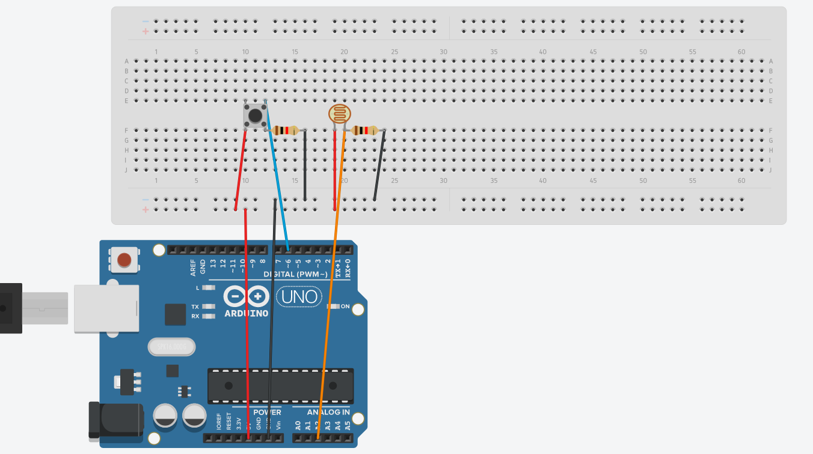
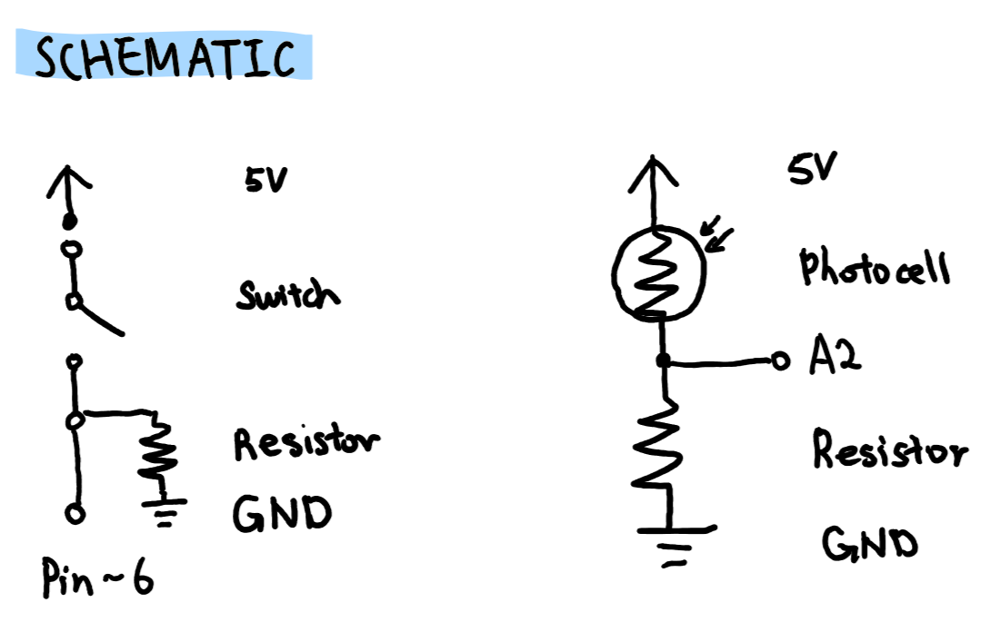
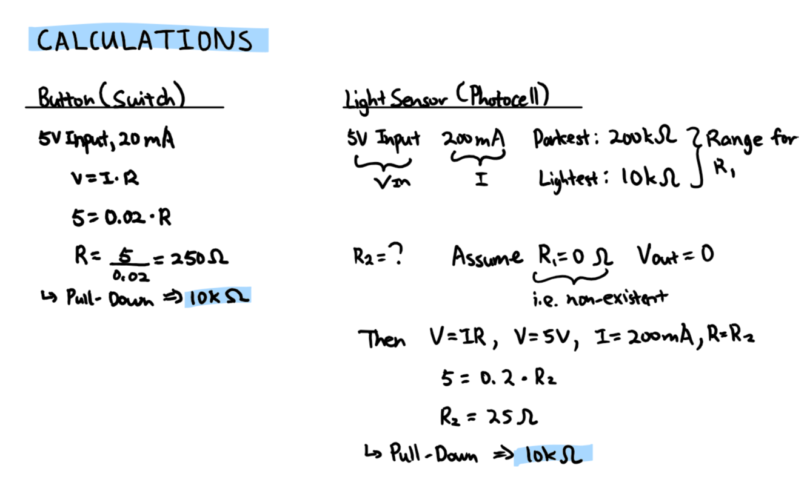

Amanda's Assignment 5!
Here is all the documentation for assignment 5!

This is the Arduino circuit. It consists of one photoresistor and one button.

This is the system in action. The circle symbolizes the pressed (green) and not pressed (orange) states of
the button. Upon pressing the button, if the environment around the photocell becomes dark, the background
will change from a light blue to a dark blue.


These are the schematic and calculations.
For the button, any resistor above 250 ohms could be used. I decided to use a 10k ohms resistor to act as a
pull-down resistor. For the photocell, I assumed the "worst" case scenario, where there is no voltage output
at the gate and calculated the resistance for it to be 25 ohms. I decided to use a 10k ohms resistor to act
as a pull-down resistor.
// constant for the button
// connected to digital pin 6
const int BUTTON = 6;
// constant for the photocell
// connected to analog pin 2
const int PHOTOCELL = A2;
// function called when file starts
void setup() {
// initiates Serial Monitor at 9600 baud
Serial.begin(9600);
// initiates button pin as input
pinMode(BUTTON, INPUT);
// initiates photocell pin as inpit
pinMode(PHOTOCELL, INPUT);
}
// function executed after setup; repeatedly
void loop() {
// creates variable for value read from button pin
int buttonState = digitalRead(BUTTON);
// creates variable for value read from photocell pin
int sensorValue = analogRead(PHOTOCELL);
// prints the button value (0 or 1) to Serial Monitor
Serial.print(buttonState);
// uses comma to separte button and sensor values
Serial.print(",");
// prints the sensor value to Serial Monitor
Serial.println(sensorValue);
// delays for 500 miliseconds
delay(500);
}
This is the code snippet for the Arduino. It takes the values from the sensors and outputs them to the Serial Monitor
// This code is based on the following source:
// https://github.com/machineagency/hcde439/tree/master/p5-examples-and-addons/hcde439-example
// variable to hold an instance of the serialport library
var serial;
//rename to the name of your port
var portName = 'COM3'
// variable for button state (0 or 1; not or pressed)
var buttonState;
// variable for light sensor values
var sensorValue;
// sets up the program
function setup() {
// make a new instance of the serialport library
serial = new p5.SerialPort();
// set a callback function for the serialport list event
serial.on('list', printList);
// callback for connecting to the server
serial.on('connected', serverConnected);
// callback for the port opening
serial.on('open', portOpen);
// callback for when new data arrives
serial.on('data', serialEvent);
// callback for errors
serial.on('error', serialError);
// callback for the port closing
serial.on('close', portClose);
// list the serial ports
serial.list();
// open a serial port
serial.open(portName);
// creates a 1200 * 800 canvas
createCanvas(1200, 800);
}
// get the list of ports:
function printList(portList) {
// portList is an array of serial port names
for (var i = 0; i < portList.length; i++) {
// display the list the console:
print(i + " " + portList[i]);
}
}
// for trouble shooting/status display; see if server is connected
function serverConnected() {
// prints if server is connected
print('connected to server.');
}
// for trouble shooting/status display; see if port is open
function portOpen() {
// prints if port is open
print('the serial port opened.')
}
// for trouble shooting/status display; see if serial port has error
function serialError(err) {
// prints error if existent
print('Something went wrong with the serial port. ' + err);
}
// for trouble shooting/status display; see if serial port is closed
function portClose() {
// prints if port is closed
print('The serial port closed.');
}
// reads data from serial and converts button state and sensor value
// into variables
function serialEvent() {
// executes if serial sending data
if (serial.available()) {
// creates a variable for data read from serial
var datastring = serial.readLine();
// executes if no error
try {
// sets button state as the extraction at index zero
buttonState = datastring.substring(0, 1);
// for trouble shooting; prints button state to console
console.log(buttonState);
// sets sensor value as the extraction from index two to end
sensorValue = datastring.substring(2);
// for trouble shooting; prints sensor value to console
console.log(sensorValue);
// executes if there is error
} catch(err) {
// prints error to console
console.log(err);
}
}
}
// function loops forever until program stops or noLoop() is called
function draw() {
// sets the background to pale blue using HEX code
background("#ADCBE3");
// disables drawing the strokes
noStroke();
// creates a circle at (position x, y, and diameter)
circle(560, 380, 200);
// if button is pressed (ie. 1)
if (buttonState == 1) {
// disables drawing the strokes
noStroke();
// creates a circle at (position x, y, and diameter)
circle(560, 380, 200);
// change circle fill to pastel green using HEX code
fill("#C5DFBC");
// if sensor value is less than 250 (ie. it is dark)
if(sensorValue <= 250) {
// set background to dark blue using HEX code
background("#2A4D69");
// disables drawing the strokes
noStroke();
// creates a circle at (position x, y, and diameter)
circle(560, 380, 200);
// change circle fill to pastel green using HEX code
fill("#C5DFBC");
}
// if button is not pressed
} else {
// disables drawing the strokes
noStroke();
// creates a circle at (position x, y, and diameter)
circle(560, 380, 200);
// change circle fill to pastel using HEX code
fill("#FFB347");
}
}
This is the code snippet for the web. It uses p5.js. It takes the values from Arduino's Serial Monitor and uses them to change colour in real-time on the web!